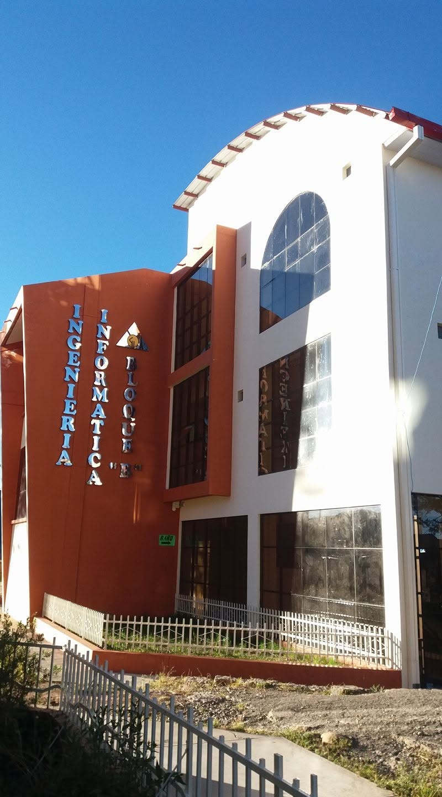
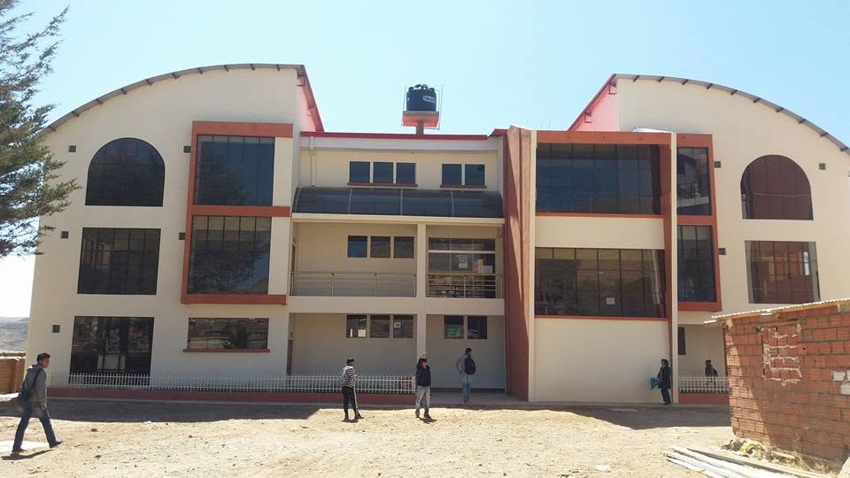
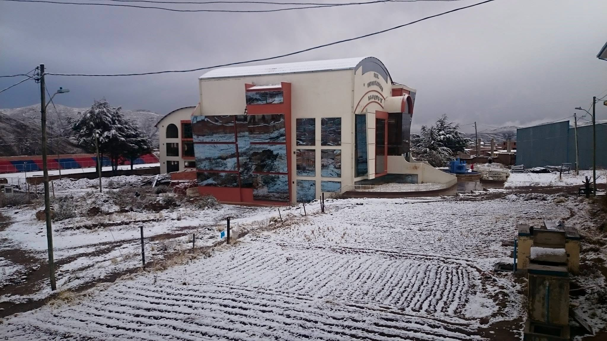

RESEÑA HISTÓRICA
La Carrera de Ingeniería Informática forma parte del Área de Tecnología de la Universidad Nacional "Siglo XX", institución pública ubicada en la ciudad de Llallagua, departamento de Potosí. Su creación respondió a la necesidad de formar profesionales capaces de afrontar los desafíos tecnológicos y contribuir al desarrollo científico y productivo de la región y del país.
Desde su creación en 1998, la carrera ha experimentado un proceso constante de crecimiento académico, incorporando nuevos laboratorios, actualizando su plan de estudios y fortaleciendo la formación de sus estudiantes en diferentes áreas de la informática. Actualmente ofrece una formación orientada al desarrollo de software, arquitectura de computadores y dispositivos móviles, redes, bases de datos, inteligencia artificial, seguridad informática y otras disciplinas relacionadas con las ciencias de la computación.
Con el paso de los años, la carrera ha consolidado su prestigio mediante procesos de acreditación y actualización curricular, buscando responder a las necesidades tecnológicas de la sociedad. Su modelo de formación combina conocimientos teóricos con una importante carga práctica, permitiendo que los estudiantes desarrollen competencias para diseñar, implementar y administrar soluciones informáticas innovadoras.
La misión de la carrera es formar profesionales con sólidos conocimientos científicos y tecnológicos, comprometidos con el desarrollo social, capaces de liderar proyectos de innovación y generar soluciones que contribuyan al progreso regional y nacional. Asimismo, su visión es consolidarse como un referente académico en la formación de ingenieros informáticos mediante la excelencia, la investigación y la vinculación con la sociedad.
Línea del Tiempo
Creación de la Carrera de Ingeniería Informática.
Fortalecimiento académico e incorporación de nuevos laboratorios.
Formación de profesionales con enfoque en innovación y tecnología.
Fuente de las imágenes: Archivo fotográfico obtenido de las publicaciones oficiales de la Carrera de Ingeniería Informática de la Universidad Nacional "Siglo XX" en su página institucional de Facebook. Las imágenes se incluyen únicamente con fines académicos e ilustrativos.